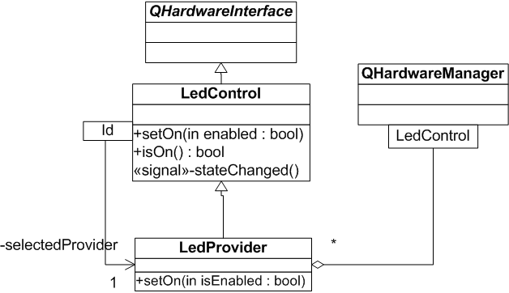
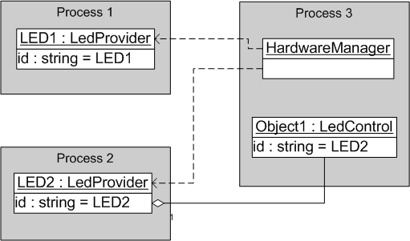

|
Home · All Namespaces · All Classes · Grouped Classes · Modules · Functions | |
A hardware interface is a particular hardware feature that needs to expose its state and functionality to other parts of Qt Extended. Inter-process messages and the valuespace are used to allow the separation of client and provider. Examples for such interfaces are the battery, the keypad light or the vibration device of a mobile phone.
The Hardware Abstraction API is split into two sets of classes. The first set provides the backend for a hardware feature (also called provider). It usually monitors the state of the hardware and reports its change. The second set of classes represents the client API. Each provider instance can have multiple client instances through which other Qt Extended components/applications can discover and control the hardware feature.
Some hardware features such as the keypad light may only exist once, while other features, such as the battery, may have several provider instances. In the case of the battery, the device may have a default battery and a secondary battery. All batteries are exposed via the same hardware interface class (QPowerSource) but Qt Extended would manages two accessory providers, one for the primary battery and one for the secondary battery.
The following example assumes that several LEDs have to be controlled. In addition, each of these LEDs is controlled by different processes. To keep it simple each LED has only two states, on and off.

The LedProvider class is instanciated by the LED controlling process. To distinguish several LedProvider instances each instance requires a unique ID. This ID is used by LedControl to identify a particular instance. The LEDProvider::setOn() function contains the required code to set the state of the LED. Once the state has changed it emits the stateChanged() signal, which notifies all LEDControl instances of the change.
The LedControl class represents the client side. A process can identify an LED provider via its ID or can choose to iterate over the list of all LEDProvider instances via QHardwareManager. The subsequent diagram demonstrates this:

| Copyright © 2009 Trolltech | Trademarks | Qt Extended 4.4.3 |